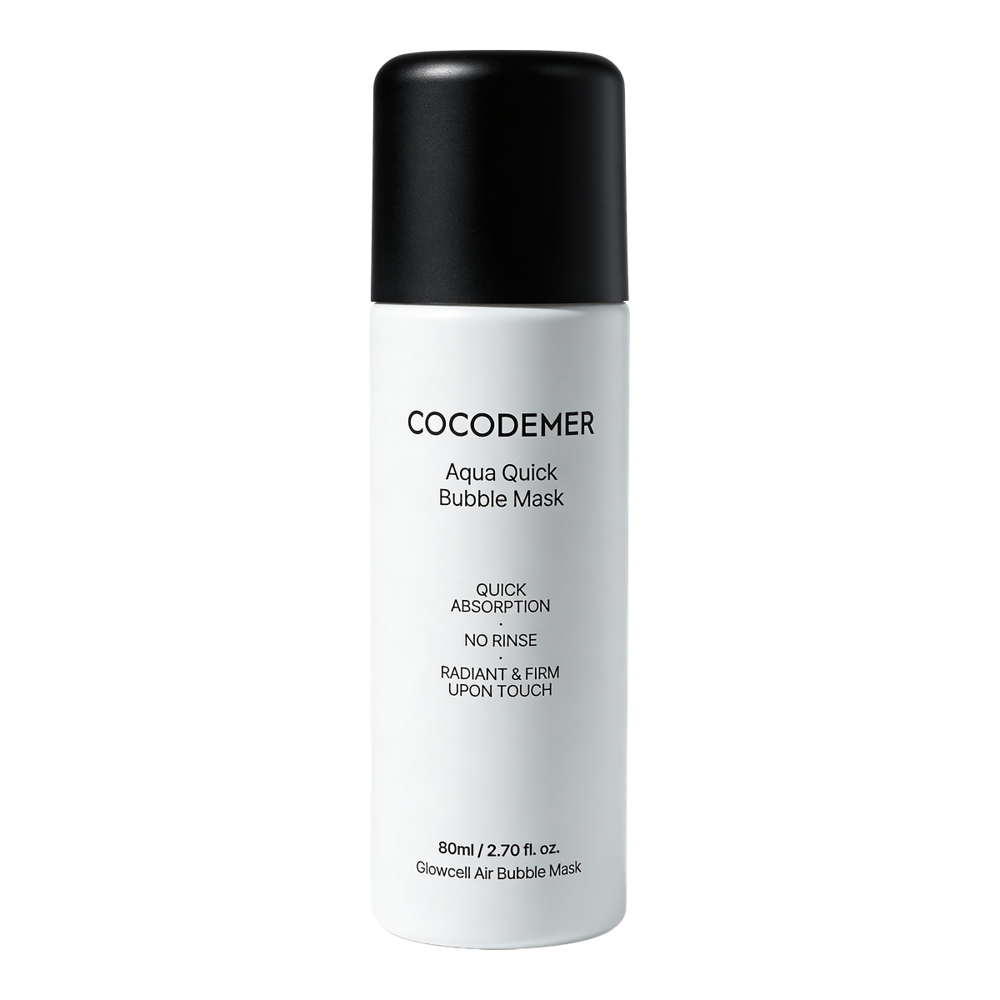
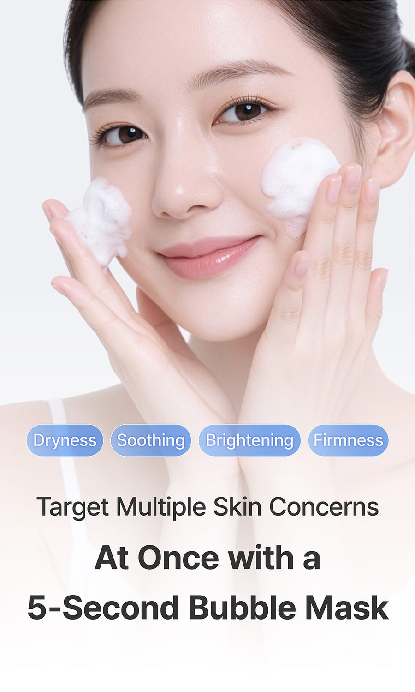
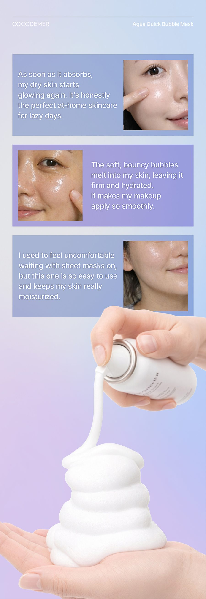
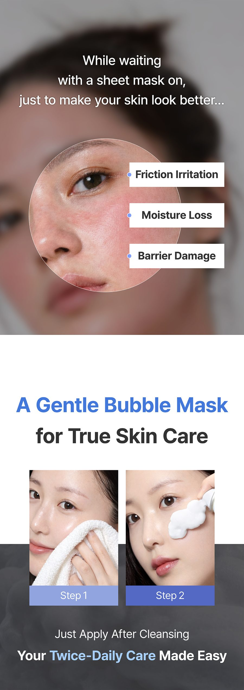
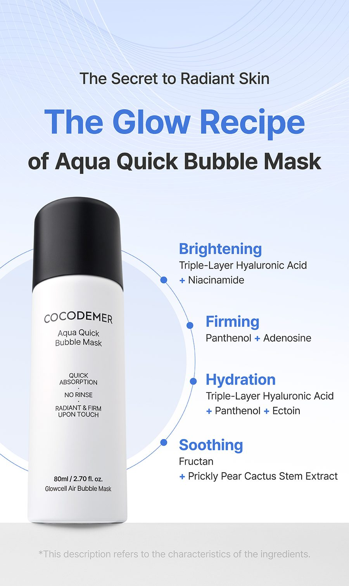
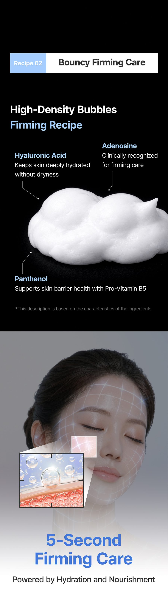
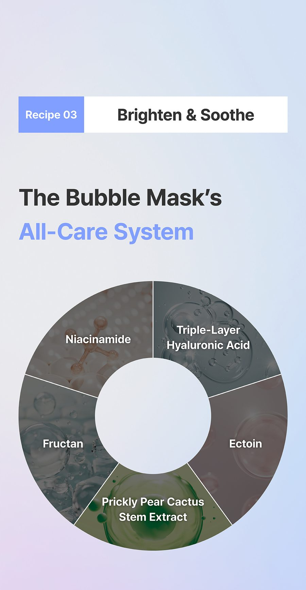
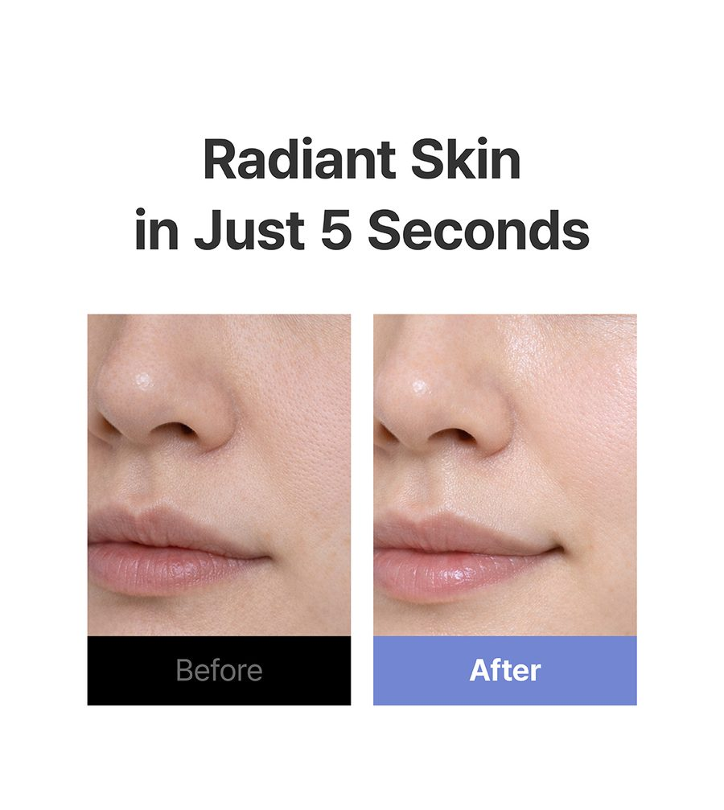
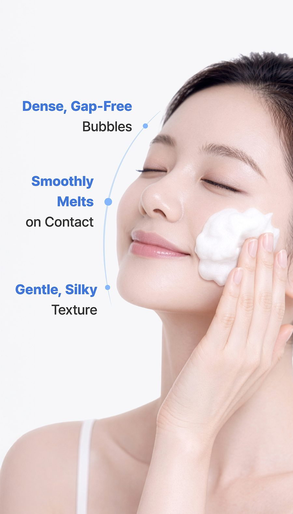
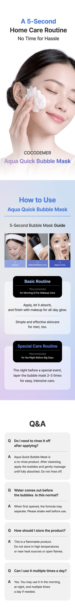

COCODEMER Aqua Quick Bubble Mask
| Contenido | 80ml |
|---|---|
| Indicado para | Todo tipo de piel |
| Propiedad funcional | Cosmético con doble funcionalidad — luminosidad y cuidado de las arrugas |
| Tecnología clave | Glowcell Air-in System |
| Fabricante · Distribuidor responsable | COCODEMER CO., LTD. |
La venta minorista en Corea se gestiona a través de nuestro socio de distribución, Cocodemer International. Para la distribución internacional, utilice el formulario de consulta B2B.









Agite y aplique — las burbujas hacen el resto
Al presionar el dosificador, las micelas de la fórmula atrapan aire y forman burbujas densas. Cuando esas burbujas se asientan sobre la piel, los activos que contienen se absorben rápidamente.
No hay nada que aplicar y retirar, ni nada que enjuagar. La fórmula se absorbe allí donde se aplica, por lo que se integra en la rutina de mañana o de noche sin interrumpirla.
Aplique, deje que se absorba y listo: una mascarilla de 5 segundos sin necesidad de volver a lavarse la cara. De día funciona como base de maquillaje luminosa y, de noche, como cuidado nocturno nutritivo.
El envase de 80 ml dura más de tres meses con un uso diario y, a diferencia de una mascarilla de tela, no deja nada que tirar.
Todos los tensioactivos de la fórmula son de origen vegetal. Sin parabenos.
Ingrediente funcional iluminador certificado por el MFDS de Corea. Frena la actividad de la melanina y ayuda a atenuar las manchas oscuras y a unificar el tono de la piel.
Ingrediente funcional para el cuidado de las arrugas certificado por el MFDS de Corea. Favorece la síntesis de colágeno y contribuye a una piel más firme.
Patente n.º 10-2289551. Tres ácidos hialurónicos de distinto peso molecular actúan juntos y aportan hidratación en capas, desde la superficie hacia la capa dérmica.
El pantenol (vitamina B5) acondiciona la barrera cutánea, mientras que la ectoína, presente en los lagos salados de Egipto, forma una película protectora natural frente a la sequedad y las agresiones externas. La ectoína tiene la calificación EWG 1.
La trehalosa que permite a este cactus retener agua en el desierto actúa igual sobre la piel y mantiene la hidratación donde está.
① Agite bien el envase antes de usar. ② Presione el dosificador para dispensar una cantidad adecuada en la mano y formar burbujas. ③ Extienda suavemente sobre todo el rostro y deje que se absorba. No enjuagar. ※ Al abrirlo por primera vez, las capas pueden haberse separado; agite bien antes de usar.
| Contenido neto (volumen o peso) | 80ml |
|---|---|
| Indicado para | Todo tipo de piel |
| Vida útil / período después de la apertura | 36 meses desde la fecha de fabricación sin abrir; 12 meses después de la apertura |
| Modo de uso | Agite bien el envase, presione el dosificador para dispensar una cantidad adecuada en la mano, extienda las burbujas suavemente sobre todo el rostro y deje que se absorban. |
| Fabricante de cosméticos | Indicado por separado en el producto / COCODEMER Co., Ltd. |
| Distribuidor responsable | COCODEMER CO., LTD. |
| País de origen | República de Corea |
| Lista completa de ingredientes (INCI) | Water, Propanediol, Glycerin, Caprylic/Capric Triglyceride, Cetyl Ethylhexanoate, Glycereth-26, Niacinamide, Polyglyceryl-10 Laurate, Triethylhexanoin, Methyl Gluceth-20, Polyglyceryl-10 Stearate, Butylene Glycol, 1,2-Hexanediol, Ammonium Acryloyldimethyltaurate/VP Copolymer, Hydroxyacetophenone, Disodium Cocoyl Glutamate, Fragrance, Xanthan Gum, Zea Mays (Corn) Kernel Extract, Citric Acid, Disodium EDTA, Ethylhexylglycerin, Sodium Cocoyl Glutamate, Adenosine, Hyaluronic Acid, Hydrolyzed Hyaluronic Acid, Sodium Hyaluronate, Fructan, Glucose, Sodium Citrate, Panthenol, Ectoin, Opuntia Ficus-Indica Stem Extract * Propelente: Butane, Propane |
| Aprobación como cosmético funcional | Cosmético con doble funcionalidad — luminosidad y cuidado de las arrugas |
| Precauciones | 1. Si durante o después del uso, o por exposición a la luz solar directa, aparecen enrojecimiento, hinchazón, picor u otra irritación, consulte a un dermatólogo. 2. Evite su uso sobre piel lesionada o con heridas. 3. Conservación y manipulación a) Mantener fuera del alcance de los niños. b) Conservar protegido de la luz solar directa. c) No conservar a temperaturas superiores a 40 °C. 4. Producto en aerosol con gas comprimido inflamable a) No pulverizar hacia una llama. b) No utilizar cerca de calefactores, estufas u otras fuentes de fuego. c) Ventilar la habitación después de usarlo en un espacio cerrado. d) No arrojar al fuego. 5. Evitar el contorno de los ojos. |
| Garantía de calidad | En caso de que este producto presente algún defecto, la compensación se rige por las Normas de Resolución de Conflictos de Consumo publicadas por la Comisión de Comercio Justo de Corea. |
| Atención al cliente | 070-4858-4554 |
* Información obligatoria según las normas coreanas de etiquetado y publicidad de cosméticos. Esta es una traducción de referencia; para la declaración de ingredientes certificada, el CPSR o el CoA, póngase en contacto con nosotros a través de la consulta B2B.